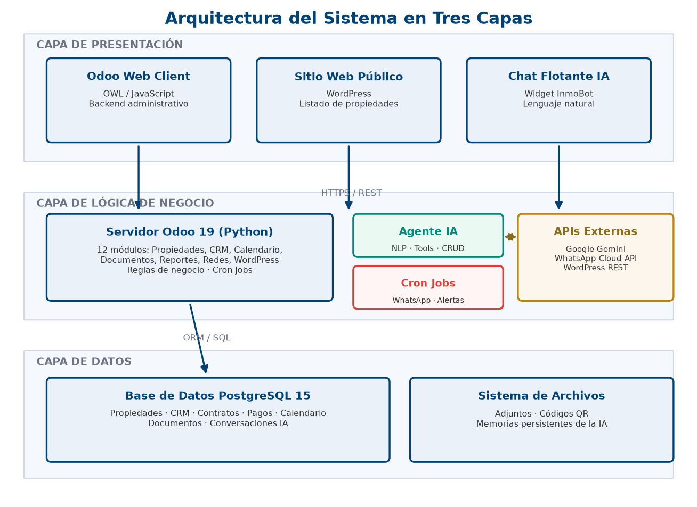
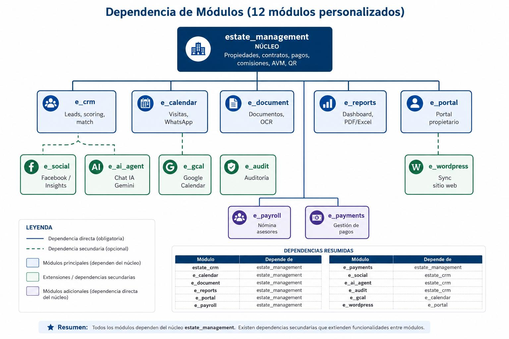
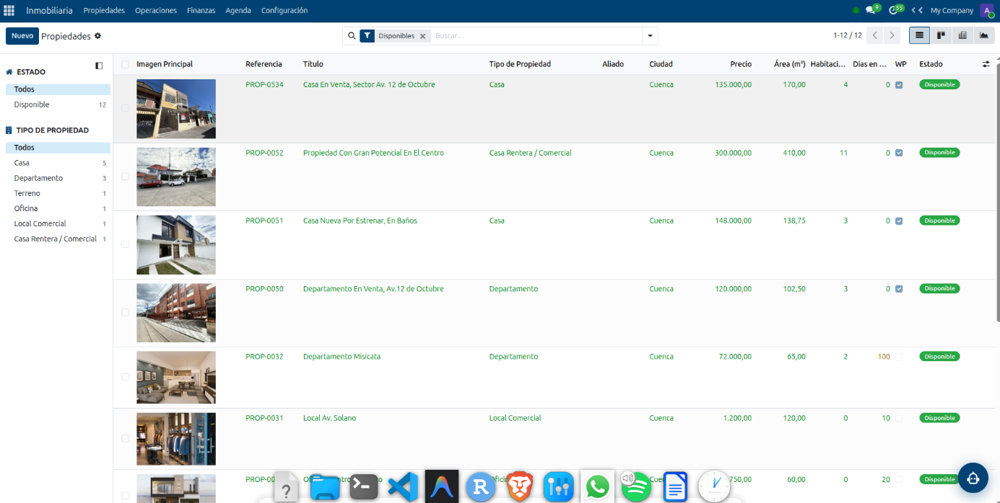
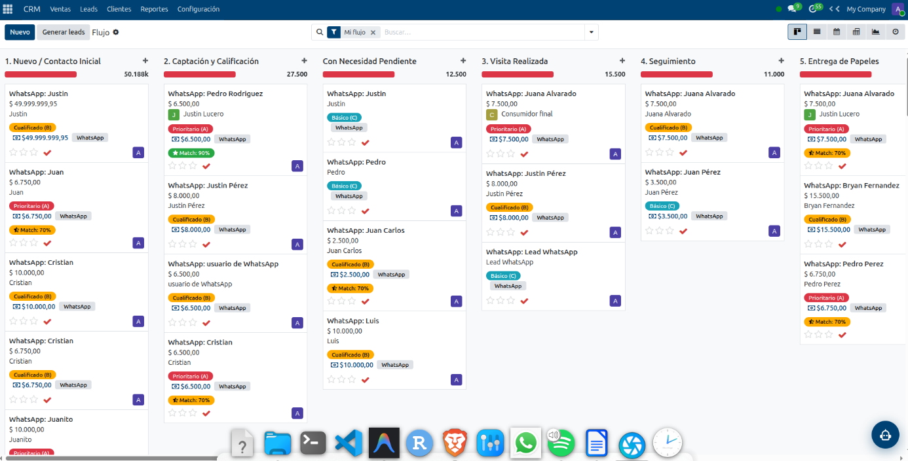
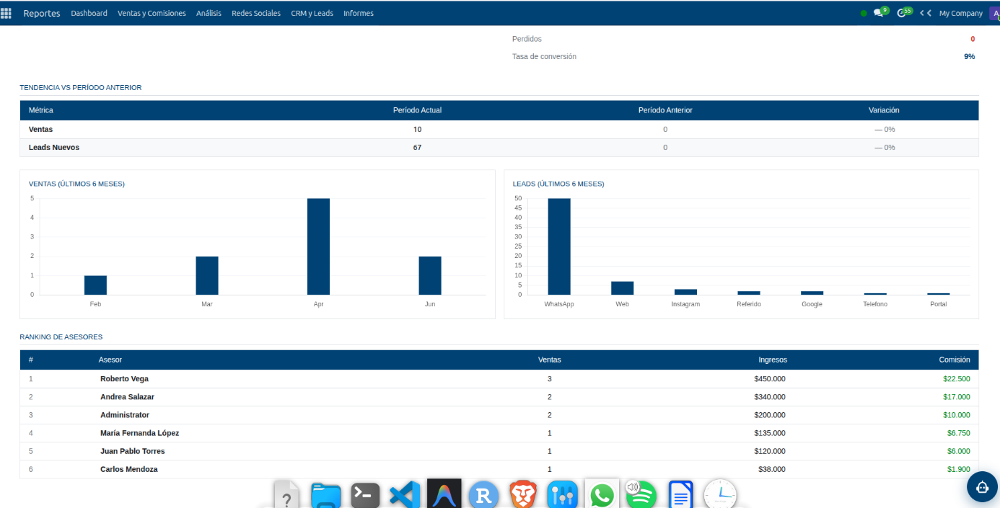
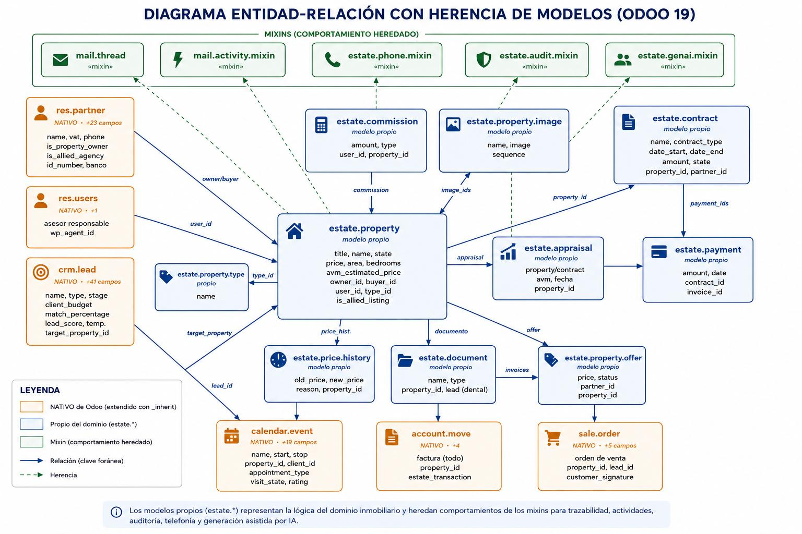
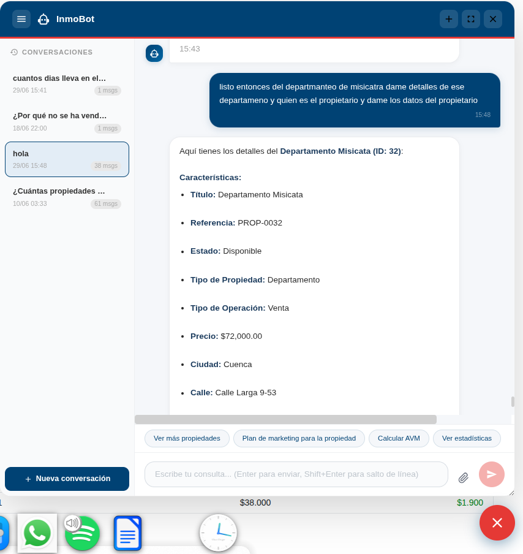
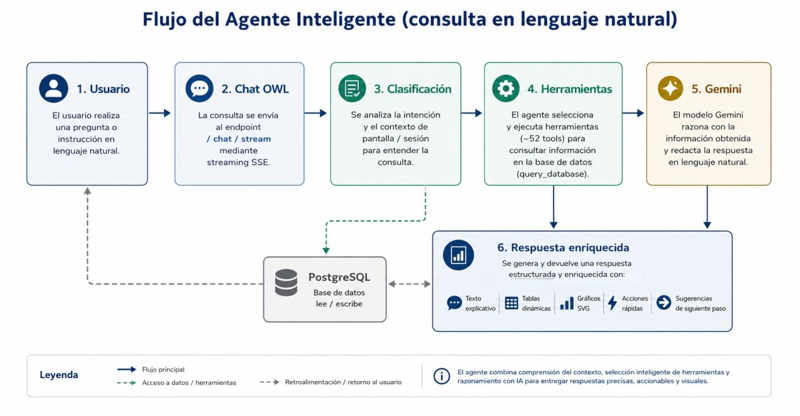

Contenido
Agenda
- Problema y contexto
- Objetivos
- Marco teórico
- Metodología y arquitectura
- Resultados por objetivo específico (OE1–OE5)
- Pruebas y validación
- Conclusiones y recomendaciones
Diseñar e implementar un sistema de gestión inmobiliaria basado en ERP Odoo con integración de un agente inteligente para consulta y generación de reportes.
| Sprint | Módulos | Entregable principal |
|---|---|---|
| 1 | Gestión Inmobiliaria | Inventario, estados y contratos |
| 2 | CRM Inmobiliario | Leads y algoritmo de match presupuestal |
| 3 | Calendario y Documental | Visitas, recordatorios WhatsApp, OCR |
| 4 | Reportes y Analítica | Dashboards KPI, exportación PDF/Excel |
| 5 | Ecosistema Web | Portal público sincronizado (WordPress) |
| 6 | Inteligencia Artificial | Agente conversacional, AVM, alertas |








| Aspecto | Antes | Con el sistema |
|---|---|---|
| Registro de propiedades | Hojas de cálculo, duplicados | Ficha única, sin duplicados |
| Seguimiento de clientes | Anotaciones informales | Leads clasificados y priorizados |
| Recordatorios de citas | Memoria del asesor | Automáticos por WhatsApp |
| Control de contratos | Vencimientos sin vigilancia | Alertas automáticas |
| Publicación web | Manual | Sincronización automática |
| Reportes | Consolidación manual, con errores | Tablero en tiempo real |
| Objetivo | Estado | Evidencia |
|---|---|---|
| OE1 | Cumplido | Requisitos + matriz de trazabilidad |
| OE2 | Cumplido | 12 módulos operativos |
| OE3 | Cumplido | Agente con lenguaje natural, RAG, memoria, alertas |
| OE4 | Cumplido | Sistema desplegado en producción (VPS + HTTPS) |
| OE5 | Cumplido | Información centralizada, automatización verificada |
Preguntas del tribunal